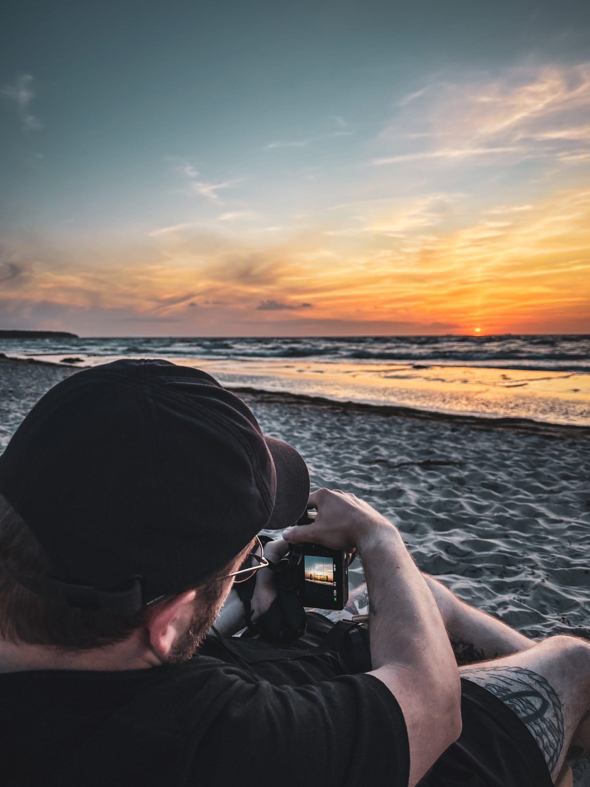
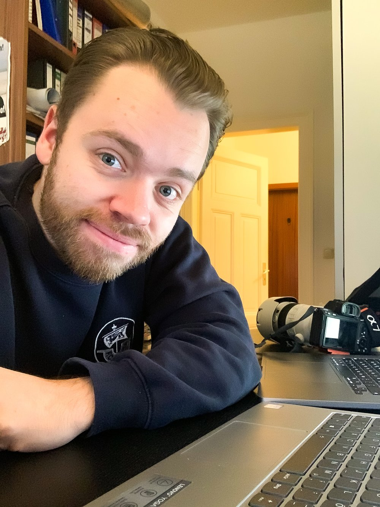
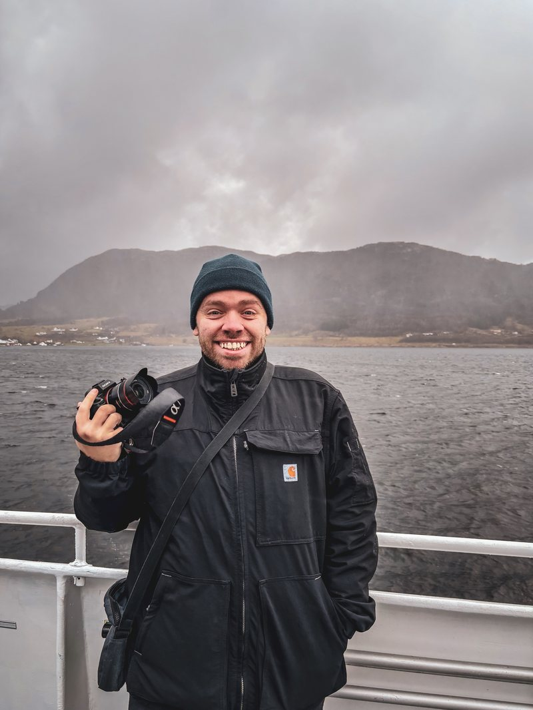

Porträt · Reportage · Menschen, die etwas bewegen
Rostock und Mecklenburg-Vorpommern
Seit über 10 Jahren fotografiere ich Menschen. In ihrem Zuhause, ihrem Job, ihrem Ehrenamt. So, wie sie sind.
Begegnungen. Geschichten. Menschen.
Tipp auf ein Bild — dann erzähle ich dir, was dahintersteckt.

Über mich
Moin, ich bin Paul aus Rostock.
Seit über 10 Jahren fotografiere ich Menschen. In ihrem Zuhause, ihrem Job, ihrem Ehrenamt. So, wie sie sind.
Wie ich dazu kam
Vor über zehn Jahren habe ich die Fotografie für mich entdeckt — durch einen guten Freund und bei den studentischen Medien in Greifswald. Durch dieses Ehrenamt und mein politisches Engagement kam alles andere dazu: Veranstaltungen, Konferenzen, Demonstrationen. Mal der einzelne Mensch, mal eine Gruppe, mal der Ort. All das hat nie aufgehört.
Meine bisherige Arbeit hat damit mehr zu tun, als es klingt: Workshops konzipieren und durchführen, systemische Beratung, heute politische Arbeit. Vor meiner Haustür, in Communities wie DaMOst, bis nach Berlin und Sachsen-Anhalt. Immer ging es darum, mit sehr unterschiedlichen Menschen ins Gespräch zu kommen und etwas auf die Beine zu stellen. Sich zu empowern, kreativ zu werden. Gemeinsam.
Vor der Kamera ist es dasselbe: sich zeigen.
Und dabei hilft ein Gespräch mehr als jede Anweisung, wie man sich hinstellen soll. Jetzt mache ich etwas Eigenes daraus. So wie du bist. So wie ich bin.
Wie ich arbeite
Viele sagen mir vorher, dass sie sich vor der Kamera unwohl fühlen. Deshalb arbeite ich so:

Vorgespräch
Telefon oder Video, zwanzig Minuten. Du erzählst, worum es geht. Danach weißt du, wie es abläuft — und ich weiß, worauf es dir ankommt.
Der Ort
Dein Zuhause, dein Betrieb, dein Lieblingsweg am Wasser. Orte, an denen du nicht überlegen musst, wie du dastehst. Welche Tageszeit am besten passt, schauen wir zusammen.
Das Shooting
45 bis 60 Minuten. Die erste Viertelstunde ist zum Ankommen, da reden wir mehr, als ich fotografiere. Danach vergisst du die Kamera meistens von selbst.
Die Auswahl
Die Auswahl treffe ich. Mir sind die Bilder am liebsten, in denen wirklich etwas passiert — ein echter Blick, ein Lachen, das nicht gestellt ist. Farben und Licht korrigiere ich, mehr nicht. Niemanden mache ich schlanker, jünger oder glatter.
Die Bilder
Wenige Tage später bekommst du deine Galerie zum Herunterladen. Die Bilder gehören dir — drucken, verschenken, posten, was du willst. Ob ich ein paar davon selbst zeigen darf, besprechen wir vorher. Du entscheidest.
Für dich
Du willst ein Bild von dir, das sich nach dir anfühlt.
Portraitfotografie
Kein Fotostudio. Keine aufgesetzte Pose. Nur du – so wie du bist. Ich lerne dich vorher kennen und gemeinsam suchen wir den Ort, der sich für dich richtig anfühlt.
- Vorgespräch zum Kennenlernen
- Gemeinsame Ortswahl
- ca. 60 Minuten Shooting
- Professionelle Bildbearbeitung
- Passwortgeschützte Online-Galerie
- Optional: Kurzer Instagram-Clip
Paar- und Familienfotografie
Bevor ich auch nur eine einzige Aufnahme mache, will ich eure Geschichte kennen. Wie habt ihr euch kennengelernt? Was war der Moment, wo ihr wusstet – das ist es? Erst dann gehen wir raus. Und dann entstehen Bilder, die sich anfühlen wie ihr – in einem echten Moment.
- Ausführliches Vorgespräch
- Gemeinsame Ortswahl
- 60–90 Minuten Shooting
- 15 professionell bearbeitete Bilder
- Passwortgeschützte Online-Galerie
- Optional: Kurzer Instagram-Clip
Mini-Portrait
Einfach mal anfangen, sich zu zeigen. 30 Minuten, ein Ort, 5 bearbeitete Bilder. Kein Aufwand, kein Stress – nur du.
- 30 Minuten Shooting
- 5 professionell bearbeitete Bilder
- Passwortgeschützte Online-Galerie
Für deine Organisation
Ihr braucht Bilder für Bericht, Website und Presse — von Menschen, nicht von Logos.
Menschen, die etwas bewegen
Du engagierst dich. Du baust etwas auf. Du setzt dich ein – für deine Gemeinde, dein Unternehmen, deine Überzeugung. Ich begleite dich bei dem, was du tust, und mache Bilder, die zeigen, wer du bist und wofür du stehst. Kein Anzugfoto vor weißer Wand. Sondern du – mitten in deiner Welt.
Bilder aus diesem Bereich sind unter anderem bei KATAPULT MV, der Universität Greifswald und DaMOst e. V. erschienen.
- Gespräch vorab
- Begleitung an deinem Ort
- 2–3 Stunden Shooting
- 20–25 bearbeitete Bilder
- Optional: Kurzer Instagram-Clip
Individuelle Projekte
Veranstaltungen, dokumentarische Begleitungen oder besondere Ideen, die in keine Schublade passen. Lass uns einfach reden.
Jetzt anfragenGemäß § 19 UStG wird keine Umsatzsteuer berechnet.
Wo meine Bilder erschienen sind.
Veröffentlicht heißt: jemand hat sich für genau dieses Bild entschieden.
Kontakt
Bereit für dein Shooting? Oder erstmal Fragen? Schreib mir.